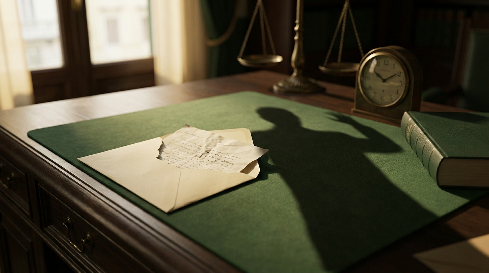

Minacce velate del capo: quando la pressione sul lavoratore diventa estorsione
La minaccia, anche solo velata, di licenziamento o ritorsione per costringere il dipendente ad accettare condizioni peggiorative può integrare il reato di estorsione. Un orientamento della Cassazione penale conferma che il timore indotto nel rapporto di subordinazione ha efficacia coartante. Per il lavoratore può aprire ulteriori margini risarcitori in sede penale, tramite costituzione di parte civile.

Il caso: la minaccia che non ha bisogno di parole
Nel rapporto di lavoro il potere contrattuale è strutturalmente squilibrato. Il datore dispone di leve concrete – il posto, la mansione, la sede, la progressione – che pesano sulle scelte del dipendente anche quando non vengono evocate esplicitamente.
Proprio su questo terreno si è formato un orientamento della Cassazione penale: la minaccia rilevante ai fini dell'estorsione non deve essere necessariamente esplicita. Può essere velata, implicita o "ambientale", cioè desumibile dal contesto e dal rapporto di forza tra le parti. Quel che conta è l'effetto: la prospettazione di un male ingiusto (il licenziamento, il demansionamento, la ritorsione) usata per piegare la volontà del lavoratore.
Inquadramento normativo
Il riferimento è l'art. 629 del codice penale. Commette estorsione chi, *mediante violenza o minaccia*, costringe taluno a fare o omettere qualcosa, procurando a sé o ad altri un ingiusto profitto con altrui danno. La pena base va da cinque a dieci anni di reclusione, oltre alla multa.
Due elementi vanno tenuti distinti. Il profitto ingiusto del datore può consistere nel risparmio di costo o nel vantaggio organizzativo ottenuto imponendo, ad esempio, orari non dovuti, rinunce a spettanze, dimissioni "concordate". Il danno del lavoratore è la lesione patrimoniale e personale che ne deriva. La minaccia di licenziamento, in sé legittima quando ricorrono i presupposti, diventa penalmente rilevante quando è usata come strumento di coazione per un fine illecito.
È rilevante anche un profilo procedurale: l'estorsione è reato procedibile d'ufficio. Non occorre quindi alcuna querela di parte e non vi sono termini di decadenza da rispettare; l'autorità giudiziaria procede una volta acquisita la notizia di reato.
La linea di confine: riorganizzazione legittima o abuso
Il punto delicato è distinguere l'esercizio fisiologico del potere datoriale dall'uso strumentale e ricattatorio dello stesso.
La riorganizzazione aziendale, la modifica delle mansioni nei limiti di legge, persino il licenziamento per giustificato motivo restano prerogative legittime del datore. Non basta che il lavoratore subisca una conseguenza sgradita perché scatti il reato.
La soglia si supera quando la prospettazione del male è strumentale a ottenere ciò che non è dovuto: la rinuncia a diritti retributivi, l'accettazione di condizioni illegittime, dimissioni estorte sotto la pressione del "o così, o sei fuori". Qui il potere gestionale degenera in coazione.
Implicazioni pratiche
Per il datore di lavoro. La gestione dei rapporti va condotta nei binari della legittimità sostanziale e formale. Pressioni informali, ultimatum verbali, "inviti" ad accettare peggioramenti possono essere riletti, a posteriori, come condotta minatoria. Il rischio non è solo civilistico: è penale, con responsabilità personale di chi esercita il potere.
Per il lavoratore. La condotta può fondare, oltre alle tutele lavoristiche, una responsabilità penale del datore. In quel contesto il dipendente può costituirsi parte civile per ottenere il risarcimento del danno patrimoniale e non patrimoniale. La prova, però, è decisiva: la natura implicita della minaccia rende centrale la ricostruzione del contesto.
Cosa fare in concreto
- Documenta ogni comunicazione. Conserva email, messaggi, scambi scritti che attestino richieste, pressioni o condizioni imposte. La traccia documentale supplisce all'assenza di parole esplicite.
- Annota date, luoghi e testimoni. Ricostruisci con precisione gli episodi: chi era presente, cosa è stato detto, in quale occasione. Le dichiarazioni di colleghi possono assumere rilievo.
- Non distruggere materiale probatorio. Trattandosi di reato procedibile d'ufficio non vi sono termini di querela, ma la tempestività serve a preservare le prove prima che si disperdano.
- Distingui la richiesta lecita dall'abuso. Non ogni decisione sfavorevole è reato: l'analisi va calibrata sul fine perseguito e sulla legittimità di quanto preteso.
- Valutazione legale preventiva. È opportuna una valutazione tecnica del caso per distinguere la minaccia penalmente rilevante dalla legittima iniziativa gestionale, sul versante sia datoriale sia del lavoratore.
---
Contributo informativo a cura di Tamburro & Partners Avvocati - Avv. Giuseppe Tamburro. Non costituisce parere legale.
Ogni storia di lavoro ha i suoi tempi.
Se gestisci HR e vuoi un confronto su contenzioso, ispezioni o licenziamenti, scrivi allo studio. Ti rispondiamo entro un giorno lavorativo.